Tenth anniversary party
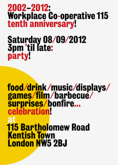
Last Saturday we celebrated ten years of Workplace Co-operative 115. To our surprise, it is indeed ten years ago – October 2002 – that the building was opened with a party in the just completed building. This anniversary party ran from early afternoon to late evening. A good number of friends attended through the day, with a strong quotient of children. As well as being a social gathering, the party had some extra dimensions.
We had invited present and past members to contribute a sheet showing the kind of work they were doing when they joined the building, and what they are doing now. In this way we assembled an exhibition about the effects of the 115 community. These sheets were pinned to felt panels on the walls of the atrium. The film-makers’ contributions took the form of film-clips, projected on a wall.
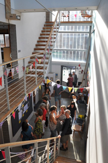
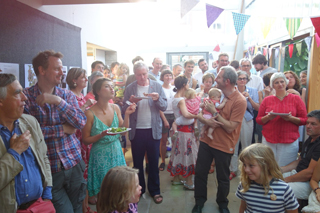
In the afternoon, games and diversions included badge-making and maggot racing.
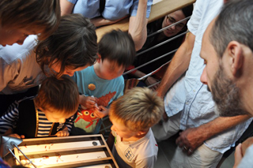
Workshop members had constructed a grill in the front courtyard. With this and a number of superior salads made in the kitchen, there was plenty to eat as well as drink.
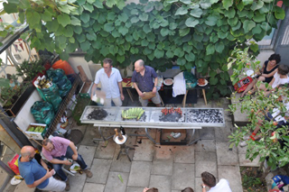
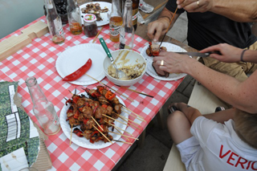
Continuing our village-fête tradition of holding competitions, we had invited members and friends to bring a homemade cake. We again invited old member Maarten de Reus – all the way from Amsterdam – to judge the cakes, and he was ably assisted by Sarah Coleman. The two judges approached their task with admirable seriousness, assessing not just look but also taste and material quality (a key value in this place).
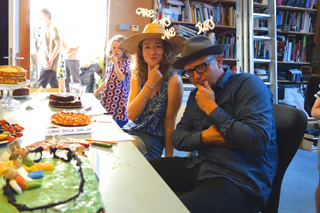
Maarten delivered the judges’ verdicts with incisive and evidently fair comments. Although the first prize went to a Dutch apple cake, there are so far no signs of the unfortunate acrimony that broke out after the fête competition seven years ago.
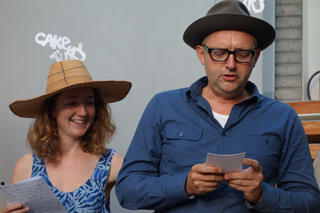
In the late afternoon and evening a sequence of performances was held in the back courtyard, opening with Gabriel and Theo’s trumpet & guitar duo. Dancers included Frieda, Luca, and Holly.
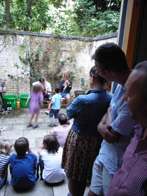
They were followed by Nicolette Moonen who played a couple of pieces on her baroque violin, with the dancers again contributing.
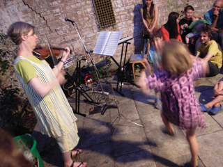
Then the band Deliberate, with old member Christopher Wilson, played a short set of pieces.
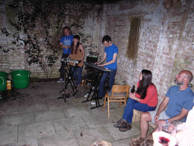
Finally, in darkness, Lisa gave a drawing performance. Her topic? What life is like at Workplace Co-operative, 115 Bartholomew Road.
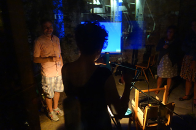